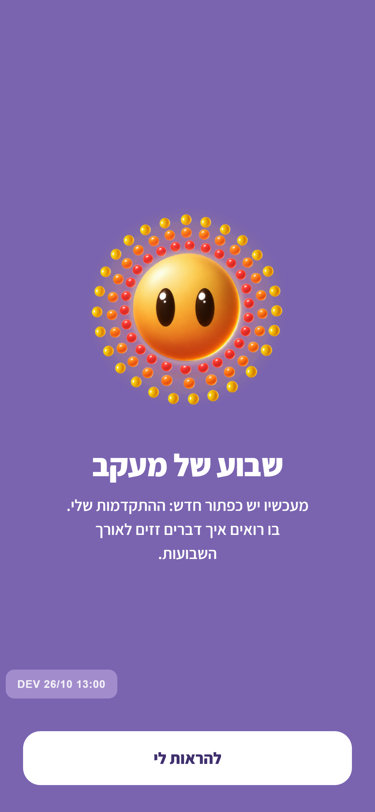
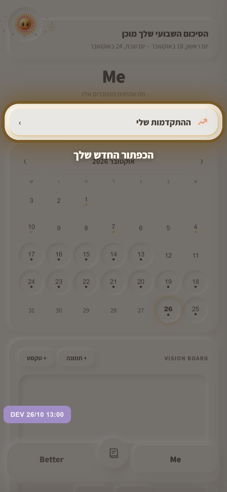

ההתקדמות שלי - אחרי שבוע של מעקב

1. המסך מוצף - בכל מקום באפליקציה, בפעם הראשונה שיש שבוע של מעקב. מיפ, וכפתור אחד.

2. הדרך לכפתור - האפליקציה עוברת ל-Me, הכל מעומעם חוץ מהכפתור החדש, וטבעת אור נושמת סביבו.
3. לחיצה עליו - ההתקדמות שלי, הכל בגלילה אחת.